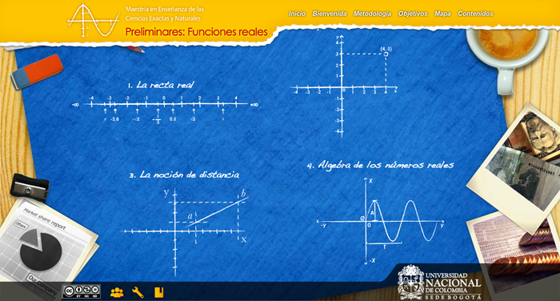
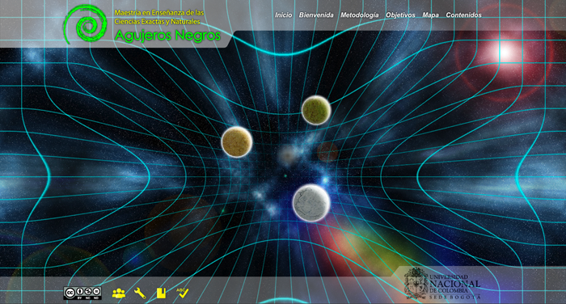
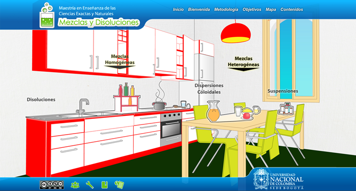
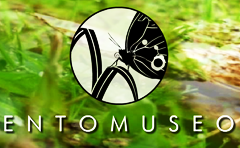
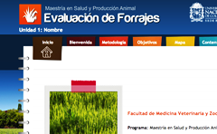
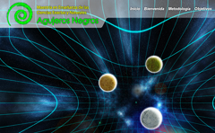

--- Proyectos ---
Maestría en Ciencias Exactas
En este proyecto se trabajaron 5 interfáces para los cursos que hacian parte de la Maestría con elementos de diseño permanentes en todas las plantillas que permitieron una relación de familiaridad, también se desarrollo un tipo de infografía con interacción, el cual contenía íconos que generaban un sentido en la navegación a partir de la organización de los contenidos.
Adecuación pedagógica: Miller Pérez.

Interfaz de "Preliminares: Funciones reales"
Interfaz de "Preliminares: Funciones reales"

Interfaz de "Agujeros Negros"
Interfaz de "Agujeros Negros"

Interfaz de "Mezclas y Disoluciones"
Interfaz de "Mezclas y Disoluciones"

Interfaz de "Transformación química de la materia"
- ENTOMUSEO
 Delónico: Delirio Onírico
Delónico: Delirio Onírico- Guía de acompañamiento integral...
 Comunicación, Cognición y Aprendizaje
Comunicación, Cognición y Aprendizaje- Maestría en Salud y Producción Animal
- Maestría en Ciencias Exactas
- Relatos autobiográficos e identidades
 Escuela deVida - Modelo de gestión
Escuela deVida - Modelo de gestión- English course - Based on the ALC
 Cinética Química
Cinética Química- Gestión de Fondos de Servicios Educativos - Guía Virtual
 Nutrición Materno Infantíl
Nutrición Materno Infantíl